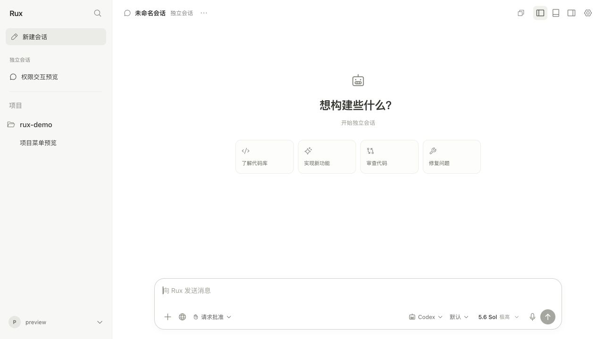

Codex 界面风格 → Rux 浅色工作台
比较布局关系与控件层级。左图为官方社区页面转载的 Codex 截图，右图为实际运行的 Rux；主题、语言和品牌有意保留差异。
参照 · Codex 新会话
低分辨率、深色、主内容区域截图。参考标题、任务入口与底部输入区的关系。
实现 · Rux 新会话

从 1280 × 720 浏览器截图中展示主内容区域，保留多 Agent 控件并使用浅色主题。
 低分辨率、深色、主内容区域截图。参考标题、任务入口与底部输入区的关系。低分辨率、深色、主内容区域截图。参考标题、任务入口与底部输入区的关系。
低分辨率、深色、主内容区域截图。参考标题、任务入口与底部输入区的关系。低分辨率、深色、主内容区域截图。参考标题、任务入口与底部输入区的关系。